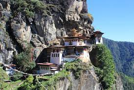

Un viaje al remoto Bután ,es famoso por sus monasterios, fortalezas (o jongs) y espectaculares paisajes que varían desde las llanuras subtropicales hasta las empinadas montañas y valles.
|  | |
Los orígenes del país se remontan al siglo viii de nuestra era, con la introducción del budismo por los tibetanos y la expansión de su imperio hacia el territorio que hoy en día es Bután. Hasta el siglo xvii la población del territorio estuvo siempre en continuas guerras, pero el jefe tibetano Shabdrung Ngawang Namgyal los unificó y comenzó a extender el territorio. Posteriormente, algunas de las tierras conquistadas pasaron a la Compañía Británica de las Indias Orientales, con el fin de que ayudasen a expulsar a los invasores. Esto se resolvió mediante un acuerdo de paz por el que Bután se retiraría a sus fronteras de 1730, aunque siguió habiendo enfrentamientos. Tras ello, derrotados, se unieron al Raj británico, el cual se independizó del Reino Unido el 15 de agosto de 1947 dando lugar a la India.
La dinastía Wangchuck ha gobernado desde entonces e introdujo diversas medidas económicas y políticas, como el índice de la Felicidad Nacional Bruta como indicador principal de desarrollo en lugar de la economía, basada en la agricultura. En 2006, el rey Jigme Singye Wangchuck abdicó en su hijo Jigme Khesar Namgyel Wangchuck, pero no fue coronado hasta 2008. Un año antes se habían celebrado las primeras elecciones parlamentarias del país, y tiempo después entró en vigor la primera constitución. La mayor parte de la población trabaja para el sector agrícola y ganadero, aunque tienen más peso económico los sectores industrial y de servicios.